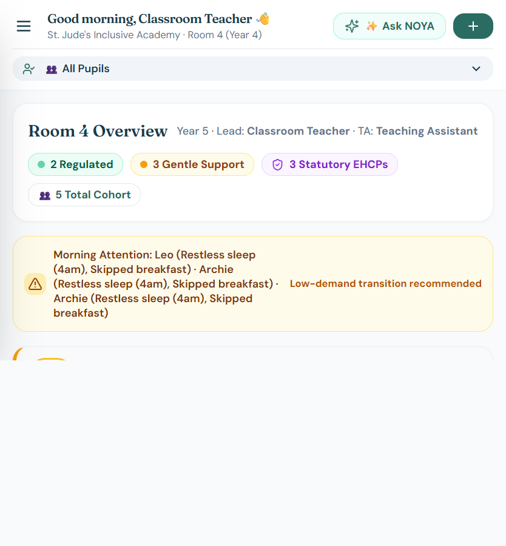
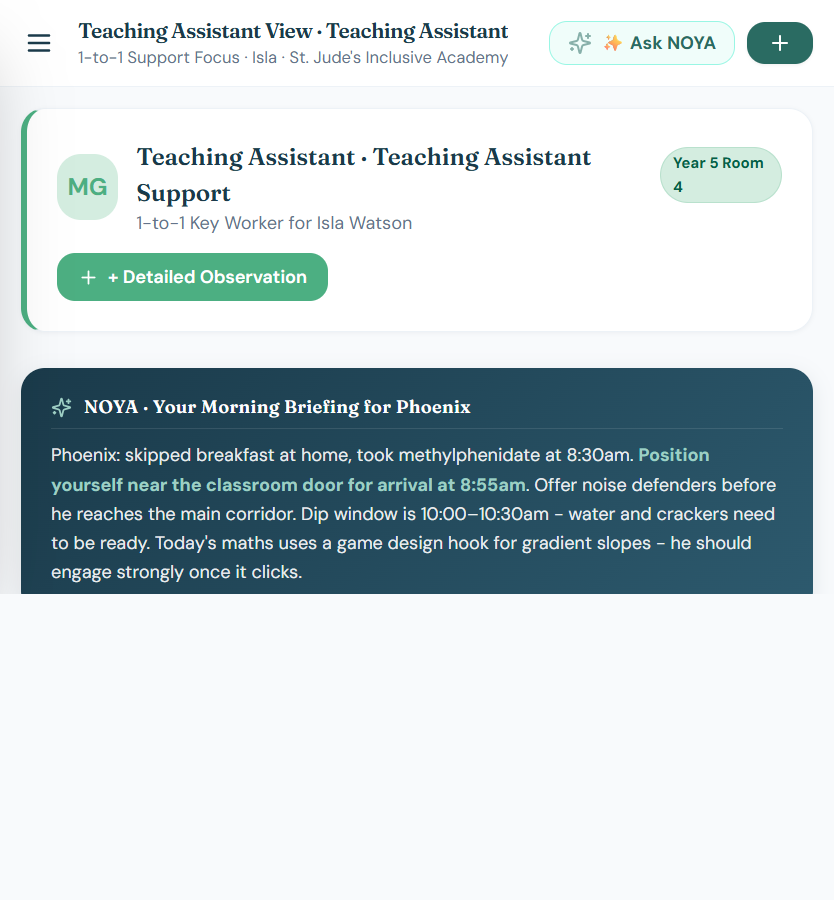
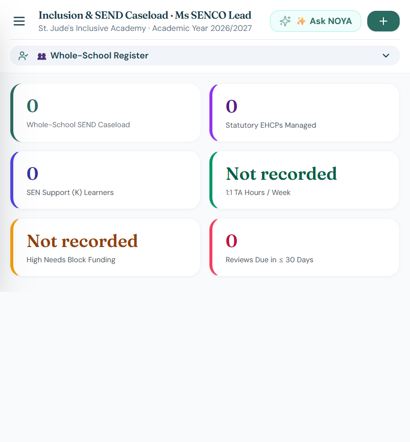
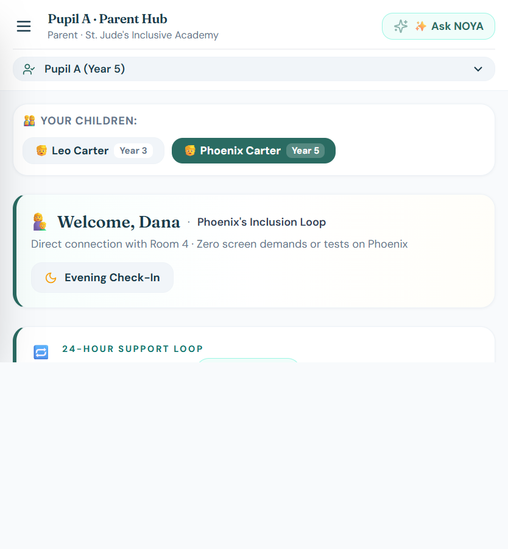
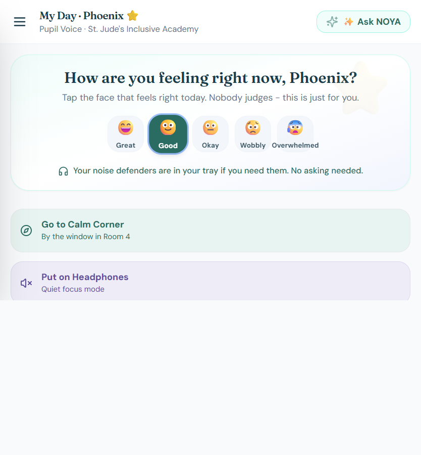
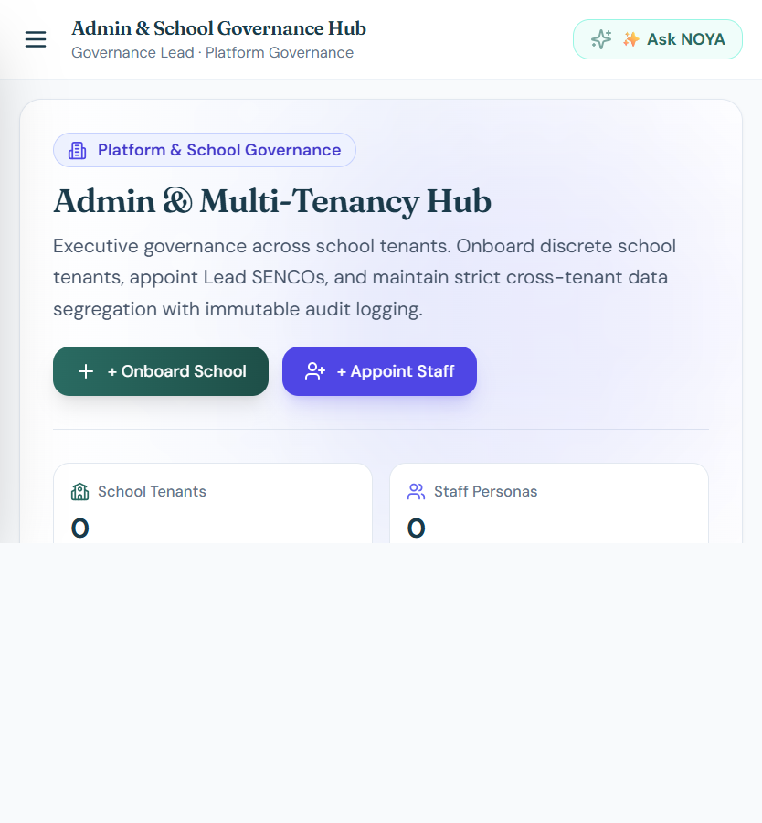

Speech, Language & Communication · SEN Support
Visual cardsProcessing pause
Classroom overview
Speech, Language & Communication · SEN Support
Autism & ADHD · EHCP
The working picture
One glance gives the classroom the information that usually lives across a home message, a handover, a pupil voice check-in and several separate notes.
It is not a replacement for professional judgement. It is a better starting point for the next conversation.
The product
See My Mind turns home context, pupil voice and classroom observations into a joined-up view of what helps — and what to try next.
How the platform works
The platform is designed around the rhythm of a real school day. People contribute what they know, in the moment they know it, and the right people receive a useful view.
Home check-ins, pupil mood, classroom observations, strengths and incidents sit alongside the child’s existing support picture.
Patterns become visible across mornings, transitions, lessons and home time — without asking one adult to hold everything in their head.
Staff receive practical, evidence-linked prompts and support tools, while people stay responsible for the decision.
A day in the platform
“The point is not more data. It is better timing.”
What the product holds together
See My Mind is not one dashboard with the same information for everyone. It is a set of connected views that follow the work people already do.
See pupils, regulation zones, arrival context, live sensory tools and the right next support in one place.
Connect home handovers, pupil voice, observations, incidents, strengths and support over time.
Turn a lesson into a practical scaffold with visual task cards, processing time and small achievable steps.
Bring caseloads, EHCP plans, reports, analytics and review-ready evidence into the SENCO’s workflow.
Keep the useful context moving between home and school, including wins, evening check-ins and handover.
Give children accessible ways to share mood, needs, strengths and progress in their own way.
The intelligence layer
NOYA helps people notice patterns across the record and suggests what might help this child, in this moment.
Built for trust
Information is separated by school and role, with clear boundaries around who can see what.
Important context should be traceable to what a child, family or professional has actually shared.
Technology supports the conversation. Teachers, SENCOs, parents and children remain at the centre.
The people around a child
See My Mind changes the emphasis for each person—so everyone can contribute what they know and see what matters to their part of the day.
Morning context, regulation zones and practical next steps before the first transition.
Keep sensory tools, transitions and quick observations close to the child.
Connect caseloads, plans, evidence and the people responsible for the next step.
Pass on context from home, see what helped and keep strengths in the record.
Share mood, needs and wins in a way that does not depend on finding the right words.
Real screens from the demo
These are genuine screens from the current See My Mind application, captured from its role-based demo personas.





